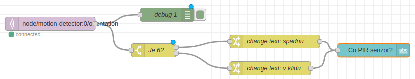

🧑💻 Trvání: 30 minut
🎯 Cílová skupina: pro jednotlivce (či skupiny, co se nepohádají)
Úvod
Už umíte připojit moduly Hardwario Tower a zobrazit jejich výstupy pomocí grafů a měřidel.
V této lekci se ponoříme hlouběji do programování v prostředí Playground.
Naučíte se pracovat se zprávami (messages), filtrovat je podle tématu a vytvářet podmíněné výstupy — například rozsvítit LED pouze při splnění určité hodnoty.
Díky tomu začnete programovat chování systému, nejen sbírat data.
Co je připraveno
✅ PIR modul je připojený, napájený a spárovaný.
✅ V Playgroundu přicházejí data o orientaci, teplotě a přítomnosti osoby.
✅ Dashboard zobrazuje aktuální hodnoty z modulu.
✅ Víte, jak si hodnoty znovu zobrazit nebo upravit, pokud zmizí.
Kdo to všechno začne
Ve vaší flow začněte uzlem mqtt in, který bude odebírat zprávy s orientací. V mém případě se jmenuje node/motion-detector:0/orientation, ale může se u vás mírně lišit podle názvu zařízení.
Aby bylo možné s nějakou zprávou pracovat, musí nejprve vůbec přijít. Pro testování se skvěle hodí PIR senzor, konkrétně jeho gyroskop, protože množství a četnost zpráv můžete snadno ovlivnit pouhým překlápěním modulu.
Co daný uzel vrací, už víte z předchozí lekce – lze jej například vykreslit do grafu. Pro lepší pochopení si ale doporučujeme výstup z uzlu mqtt in napojit na uzel debug. Ve výchozím nastavení se v debug výstupu zobrazí obsah msg.payload, tedy samotná hodnota přicházející ze senzoru. U mého PIR modulu se objevují čísla v rozsahu 1 až 6 podle toho, jak je natočený – a právě s touto hodnotou budeme dále pracovat.
Switch rozdělí výstup
Uzel Switch ze sekce Function má jeden vstup a minimálně jeden výstup. Po rozkliknutí můžete uzel pojmenovat, což vám usnadní orientaci ve vašem flow. V poli Property nastavíte, s jakou hodnotou má uzel pracovat – v tomto případě msg.payload. Níže pak nastavíte jednotlivé podmínky výstupu. Pro tuto úlohu nás zajímá situace, kdy má orientace hodnotu 6 (modul leží na PIR senzoru), a všechno ostatní zachytíte pomocí volby otherwise, která se nachází na konci seznamu podmínek.
Change změní zprávu
msg.payload je v tuhle chvíli nastavený stále na 1-5 nebo 6, podle toho, na kterém výstupu Switche je zrovna flow. node Change změní msg.payload na vaši hodnotu - v mém případě jsem změnila hodnotu na "jsem v klidu" pro hodnoty payload 1-5, nebo "spadnu" pro payload 6. Použity jsou tímto dva node Change.
Text v Dashboard
Aby bylo možné vytisknout nějaký text, v sekci Dashboard je node Text. Pojmenujte jej, abyste si jej ve Flow poznali (v mém případě se jmenuje "Co PIR senzor?") a nechte jej zobrazovat msg.payload, které v tuto chvíli nabývá hodnoty "Jsem v klidu" nebo "Bacha spadnu".

Z čísla do textu
Funguje to? V tuhle chvíli byste po otočení PIR modulu měli vidět, jak na dashboardu se text mění z "Jsem v klidu" na "Bacha spadnu". Pokud tam máte k tomu i Gauge z minulého programu, uvidíte aktuální otočení PIR modulu.
Hlídač
PIR modul je tady použitý jako gyroskopická kostka. Použijte jej opravdu jako PIR senzor! Naprogramujte jej, aby sledoval přítomnost osoby a psal na Dashboard, jestli někoho vidí nebo ne.
Shrnutí
Vstup generuje zprávy a ty umíte měnit pomocí Change.
Zprávy umíte filtrovat pomocí Switch a předávat je dalším uzlům pro zpracování.